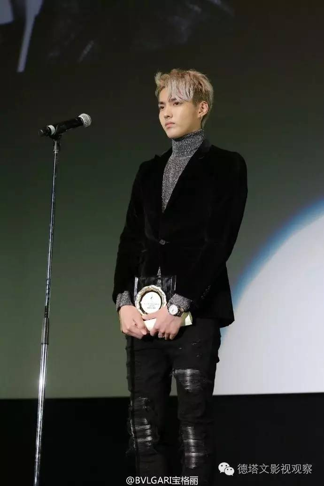

深度|吴亦凡会成为第一个成功上位的新生代小生吗

为什么要说“真正上位”？
纵观业内正当红、又有一定地位的演员，比如范冰冰、陈坤、黄渤、邓超、孙俪，到胡歌、刘涛、杨幂等，我们会发现他们似乎都在主动或被动地尝试取得“大众认可”和“网感”的平衡。这大概也是接下来相当一段时间，年轻艺人努力的方向。
网红艺人通常不缺“网感”，所需弥补的，就是“大众认知”和“大众认可”这两个层面的问题。
二是因为，仅出演电影的吴亦凡，作品数量有限、受众有限，热度有部分流失；在不积极参与热门综艺、不出演电视剧的情况下，仅凭“高逼格”时尚代言，在宣传覆盖面上还很不足够，其大众曝光度也就相对其他鲜肉低了很多。
在具体的数据分布中，可以发现近期吴亦凡的数据弱势主演在大众搜索、贴吧影响力方面。
根据两者相应的影响力覆盖族群判断：
贴吧影响力则体现了其鸡血粉不足——这似乎与我们通常对数据型艺人的认知有差距，不过却很好的说明了为何吴亦凡的网络数据会出现下滑。吴亦凡在试图走高端精品路线的同时，鸡血粉的流失成为不可避免的结果。
但我们也可发现，较年初时，吴亦凡的微博热度有一定滑落，大众搜索热度更相对较弱。大众搜索热度的高峰在1月的《老炮儿》上映时；和7月的的《致青春原来你还在这里》上映时。这再印证了在大众范畴，作品才是艺人最重要的立身之本。
然而，另一个值得瞩目的结果是，近几个月来，吴亦凡的微信数据几乎一直在上升，微信数据某方面能直观体现艺人的商业价值变化，这大概也是为何吴亦凡能够有接不完的高端代言的缘故。也即阶段性来说，吴亦凡团队对其时尚高端的商业形象的塑造还是相当成功的。
这种“黑粉”效应在吴亦凡身上体现是十分明显的，除了从“EXO”时期累计的粉圈恩怨，大约也多少有一部分“出头鸟”效应，因此，除了《老炮儿》以外，吴亦凡的电影作品得分普遍较低。
这其中有的作品可能确实品质一般，但有的作品的1星、2星比例，确实有些不合常理。举例：徐静蕾导演的《有一个地方只有我们知道》，吴亦凡的电影出道之作。这部电影笔者看过，虽然算不上佳作，但得1星也似乎言过其实了。
以及，吴亦凡六月中的“约炮门”闹出的舆论风波，相比近期某大咖疑似婚内出轨的舆论声量，也大得太多，但其实吴亦凡却远没有那位大咖来得有影响力。这似乎也与各家粉丝对他的“密切关注”都脱不开关系。
《西游伏妖篇》对吴亦凡的意义是巨大的，至少其“大众认知度”一定会上一个很大的台阶，毕竟有周星驰和徐克导演双重加持，大年初一上映，确实没有失败的理由。
我们都知道，《捉妖记》的24亿票房给井柏然带来了不啻是翻身的机会；那么，《西游伏妖篇》的票房对于本身就有数据加持的吴亦凡来说，对他的帮助幅度可能更加巨大。毕竟在当下的商业电影市场上，对年轻演员来说，票房号召力的价值才是第一位的。但是也需小心操作，否则反作用力也很巨大。
帅、时尚，这本身并没有不好。明星的价值是多方面的，时尚圈同样需要明星担任传播助力。
另外笔者还较敏感的注意到，之前吴亦凡曾在第三届丝绸之路电影节担任青年大使，最近又在东京电影节中国电影周亮相，并出席了中国驻日大使馆的酒会。这两次活动，都证明其团队可能具有一定政策面经营的能力，并可能有意像“政治正确”靠拢。这对形象的塑造，和自身政策性风险的降低都有一些帮助。
此外，吴亦凡还有一个优势，就是其掌握多种语言、具有加国国籍的国际化优势。在未来，中国的作品要走出国门、好莱坞等外国影片进入中国都需要寻找较有“共情”的媒介，而吴亦凡具有文化和语言方面融合的先天条件，事实上吴亦凡能够有机会参演好莱坞影片《极限特工3》和吕克贝松的《星际特工》，恐怕也正是有这方面的原因。